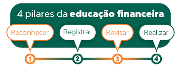

Educação financeira é um dos assuntos que todo mundo deveria estudar desde pequeno. Isso não significa só aprender a cortar gastos, economizar e juntar dinheiro. É um mecanismo para você se conhecer, perceber quais são suas prioridades e manter suas finanças equilibradas durante toda a vida. O resultado disso tudo é o crescimento pessoal e a estabilidade emocional. Afinal, ninguém fica tranquilo com dívidas acumuladas, a conta no vermelho e sonhos emperrados. E o melhor é que não existe idade mínima ou máxima para começar, o importante é tomar iniciativa.
Educação financeira e empréstimos

Seguindo as Normas da Base Nacional Comum Curricular (BNCC), a educação financeira passou a ser obrigatória nas escolas em 2020, e um dos objetivos é conscientizar jovens e crianças sobre a importância de lidar com as finanças de maneira consciente, estimulando-as, inclusive, a debater o assunto em casa com a família, não é à toa que o tema contempla também as provas do Enem. Normalmente, aparece de forma interdisciplinar ou até mesmo pode surgir como um tema da redação.
Os quatro pilares da educação financeira são:
Reconhecer:
O primeiro passo é entender como anda sua vida financeira. Nessa hora, vale se perguntar quais são suas necessidades e seus objetivos de vida. Isso porque, cedo ou tarde, seus projetos dependerão de dinheiro para acontecer.
É nessa etapa que fazemos uma reflexão sobre as próprias finanças. Ou seja: definimos o que é mais importante e o que dá para mudar nos nossos hábitos. Para ilustrar, digamos que você queira viajar a outro país. Para isso, será necessário pagar as passagens, a hospedagem e a emissão do passaporte, entre outros itens. Se sua grana está curta, o jeito é cortar algumas despesas no dia a dia para economizar mais.
Registrar:
A planilha financeira é uma ferramenta excelente para controlar os gastos. Nela, você deve incluir a sua receita (o dinheiro que entra todo mês) e as suas despesas (os pagamentos e as compras do período). Com esse mecanismo, fica mais fácil observar como funciona seu comportamento de consumo. Dá para ver exatamente quanto você gasta com aluguel, comida, vestuário e assim por diante.
Com base nessas informações, é possível organizar um planejamento financeiro. Você pode se comprometer a reduzir gastos. Que tal substituir o plano de internet por um pacote mais barato? Ou escolher marcas mais em conta no supermercado?
Revisar:
Aliás, essas práticas já fazem parte do terceiro pilar da educação financeira. Chegou o momento de corrigir os vícios para adotar hábitos de consumo mais saudáveis. O objetivo maior, aqui, consiste em gastar apenas aquilo que você pode pagar. Portanto, comprometa-se a fazer pesquisa de preços e comprar sempre à vista. Se tiver que usar o cartão de crédito, tome cuidado para não contrair uma dívida muito alta.
Outra dica é estabelecer metas de poupança. Por exemplo, defina uma quantia fixa para guardar todo mês. Faça de conta que é um boleto, como a conta de água ou de luz, para não cair na tentação de torrar essa grana.
Realizar:
Finalmente, quando você sabe onde está gastando e como usa o dinheiro, pode pôr seu planejamento financeiro em prática. Isso significa basicamente cumprir as metas estabelecidas. A ideia é gastar menos? Então corte as despesas possíveis para poupar sem sacrifícios. Acha melhor investir? Pois comece a alocar seus recursos em aplicações rentáveis.
Claro que a realização não vem de uma hora para outra. Em épocas de inflação alta, o orçamento familiar fica apertado mesmo, o que torna mais difícil equilibrar as contas. De qualquer modo, quatro pilares da educação financeira existem para ensinar as pessoas a construírem uma relação mais saudável com o dinheiro. Não se trata de enriquecer rapidamente, mas, sim, de adotar bons hábitos para a vida inteira.
O que é empréstimo consignado e como funciona?
Essa modalidade de empréstimo é um tipo de crédito cujo valor das parcelas é descontado diretamente
no pagamento.
Por esse motivo, podem solicitar um crédito consignado pessoas que se enquadrem nos
seguintes grupos:
- •Trabalhadores com carteira assinada de empresas privadas;
- •Servidores públicos (ativos, inativos e pensionistas);
- •Militares das Forças Armadas (ativos, inativos e pensionistas);
- •Aposentados e pensionistas do INSS;
- •Beneficiários do Benefício de Prestação Continuada (BPC).
As parcelas são descontadas diretamente do salário, holerite, benefício ou da aposentadoria. Ou seja, parte da renda fica comprometida após a contratação desse tipo de produto financeiro. Outra coisa importante sobre essa modalidade, é o limite de margem consignável, que representa um teto para o valor que será cobrado da parcela, atualmente esse teto representa um percentual de 45% do benefício.
Como te ajudamos na contratação de empréstimo consignado?
A ConsigFácil foi criada com o intuito de ajudar pessoas que necessitam contratar um empréstimo consignado a fazer melhores escolhas. Te ajudamos a identificar propostas de crédito com altas taxas de juros, propostas de crédito fraudulentas e fornecemos uma análise personalizada levando em consideração o perfil financeiro de cada um. Para gerar conhecimento e conscientização sobre o uso desse produto financeiro, para que você não tenha sua saúde financeira prejudicada por uma escolha ruim.
Atualmente temos uma grande concorrência no mercado financeiro e devido a isso produtos financeiros como Crédito Consignado, podem apresentar muita variação em suas condições de contratação, no que diz respeito a taxas de juros e condições de pagamento. Graças a modernização constante do nosso sistema financeiro, podemos mitigar essas desvantagens.
Veja ofertas de crédito consignado
Temos ofertas de crédito na nossa plataforma, que são analisadas pela nossa equipe de Analistas de Crédito e possuem recomendação baseada na taxa de juros, valor e prazo. Para acessar a nossa lista de ofertas.
Quer saber se a proposta de crédito consignado que recebeu vale a pena?
Envie os dados da sua proposta de crédito e receba uma análise da nossa equipe de Analistas e descubra se essa oferta é confiável e recomendada no que diz respeito a instituição financeira, taxas de juros, prazo, condições de pagamento e perfil financeiro. Para solicitar análise de proposta, clique aqui e cadastre-se.